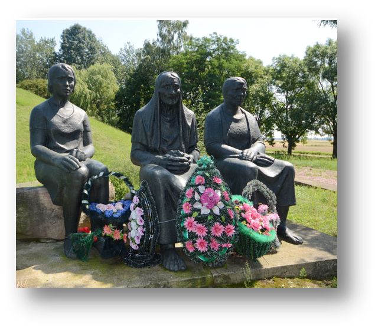
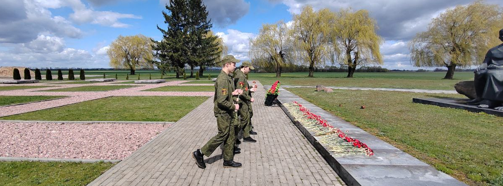

Мемориальный комплекс «Дремлёво»


Мемориальный комплекс «Дремлево» находится в нескольких километрах от агрогородка Степанки, Жабинковского района, Брестской области, и является местом памяти и скорби. Этот комплекс создан в 1982 г. на месте деревни Дремлево, которая была сожжена в ходе одной из карательных операций фашистов во время Великой Отечественной войны.
Трагедия деревни Дремлёво
На рассвете 11 сентября 1942 г. в деревню на автомашинах ворвался карательный отряд пьяных эсэсовцев. Угрожая смертью, гитлеровцы согнали всех жителей деревни в сарай и бросились грабить дома, рылись в сундуках, с кинжалами в руках гонялись по двору за курами и поросятами. Согласно акту от 10.01.1945 № 1, составленному в местечке Жабинка, районной комиссией по установлению причиненных злодеяний немецко-фашистскими захватчиками и их сообщниками, зафиксировано, что во время карательной операции уничтожено 286 жителей, в том числе 124 ребёнка и 74 женщины. Деревню сожгли, имущество (43 двора) разграбили.
человек уничтожено
из них 124 детей и 74 женщины
43 двора сожжено
В Государственном архиве Брестской области имеется на хранении документ, свидетельствующий о факте этого злодеяния.
Архитектура мемориала
В центре мемориального комплекса, у подножия насыпанного кургана установлены скульптуры трех скорбящих женщин – мать, дочь и внучка. Скульптуры отлиты из бронзы установлены на 3-х валунах.
Значение памяти
Трагедия деревни Дремлёво, как и Хатыни, – это урок всему человечеству. Памятники, подобные хатынскому мемориальному комплексу, нужны не только для того, чтобы сохранить историческую память о погибших и геноциде белорусского народа в годы Великой Отечественной войны. Они нужны нам и нашим детям, чтобы беречь самое драгоценное – мир.
Во время нашей экскурсионной поездки мы более подробно узнали о том, что страшным средством реализации политики геноцида стали карательные операции нацистов (в немецких документах они называются «акции усмирения»).